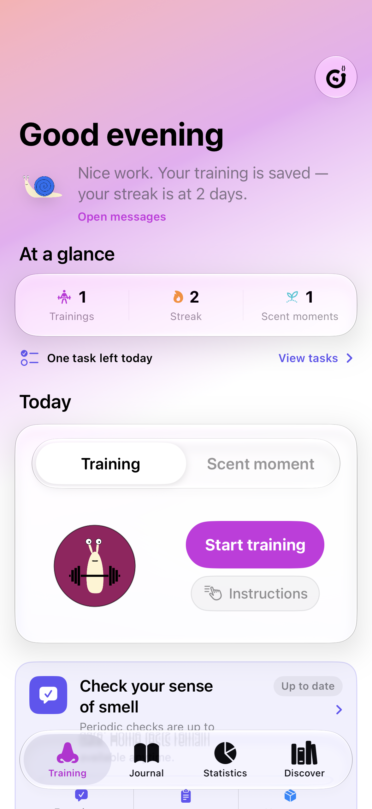
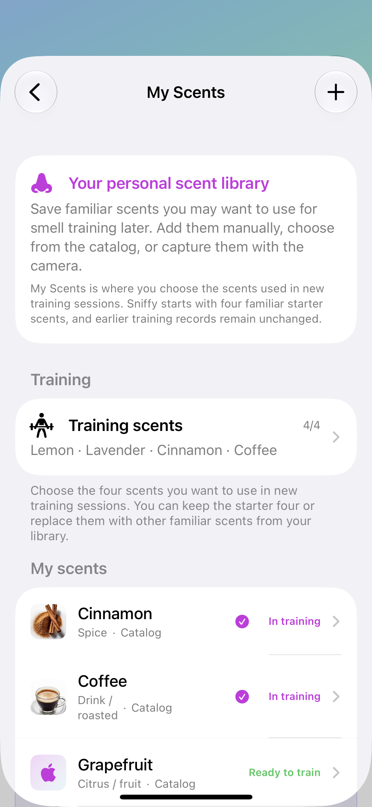
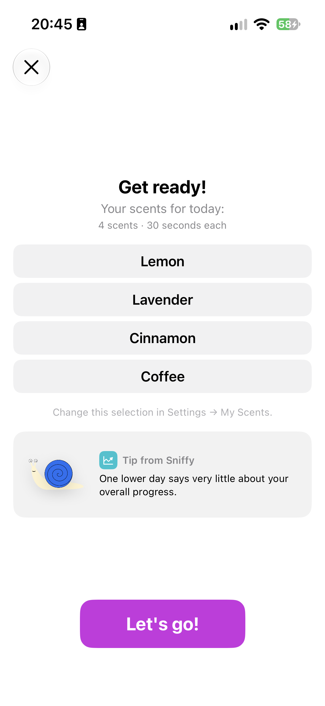
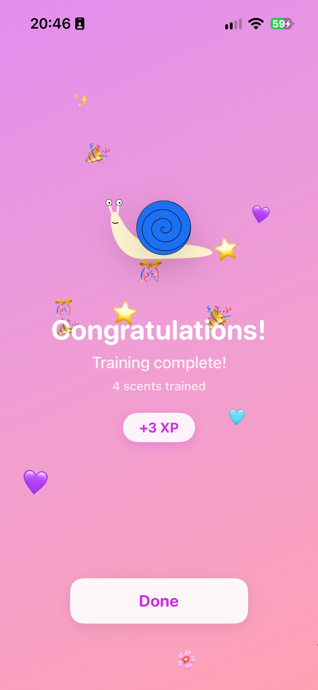
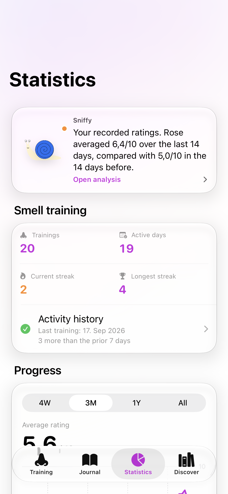

Mit vertrauten Düften trainieren
Bereite vier sichere Duftquellen vor und folge einem ruhigen, zeitlich geführten Training in deinem Tempo.
Für Riechtraining und bewusste Duftmomente im Alltag
Ob du deinen Geruchssinn nach einem Riechverlust wiedererlangen oder die Düfte in deinem Alltag einfach bewusster wahrnehmen möchtest: Sniff It gibt dir einen Ort zum Trainieren, Wahrnehmen und Festhalten deiner Erfahrungen.
Version-1-Beta. Sniff It unterstützt persönliches Üben und Selbstbeobachtung. Die App ist kein Medizinprodukt, stellt keine Diagnose und misst keine Erholung.

Deine Routine, dein Tempo
Bereite vier sichere Duftquellen vor und folge einem ruhigen, zeitlich geführten Training in deinem Tempo.
Kaffee, Regen, Shampoo, Essen – halte Düfte und Situationen fest, die dir im Alltag auffallen.
Blicke auf deine Einträge zurück, ohne dass eine App deine Erfahrung klinisch bewertet.
Sniff It in Aktion
Begleite eine Trainingseinheit, halte einen Scent Moment fest und sieh, wie alles zusammenkommt.
70-Sekunden-App-Tour
Die Vorschau nutzt ausschließlich fiktive Demonstrationsdaten.
Trainieren. Wahrnehmen. Festhalten. Verstehen.
Training, Scent Moments und was heute wichtig ist.

Organisiere Duftquellen, die du bereits besitzt und nutzt.

Eine klare Vorbereitung, bevor das geführte Training beginnt.
Zeitliche Führung hält gewöhnliche Einheiten leicht.

Deine Bewertungen bleiben subjektive persönliche Einträge.
Mit Notiz, Tags und – wenn du möchtest – Foto oder Ort.

Sieh Aktivität und Muster ohne diagnostische Interpretation.
Deine persönliche Riech-Zentrale
Sniff It bringt die verschiedenen Teile deiner Erfahrung zusammen, damit sie mit der Zeit immer nützlicher für dich werden.
Organisiere sichere, vertraute Duftquellen und wähle vier fürs Training. Dein eigener Eindruck kommt vor pädagogischen Referenzbegriffen.
Eine Riecherfahrung kann ein ganzer Moment sein – nicht nur ein einzelner Geruch. Speichere Notizen und beschreibende Tags, optional mit Foto oder Ort.
Sieh Trainingsaktivität, persönliche Bewertungen und duftspezifische Beobachtungen. Sniff It macht daraus keinen klinischen Score.
Erstelle selbstbestimmte PDF- oder CSV-Exporte, wenn du eine Kopie deiner Einträge sichern, ansehen oder teilen möchtest.
Datenschutz
Sniff It erfordert kein Konto und sendet persönliche Riecheinträge nicht automatisch an ein Forschungs-Backend. App-Daten werden lokal auf deinem iPhone gespeichert; geteilt wird nur, wenn du dich ausdrücklich für einen Export oder das Teilen entscheidest.
Für Forschende, Behandelnde und Patientenorganisationen
Sniff It verbindet mehrere Teile der Erfahrung von Teilnehmenden in einer zweisprachigen iOS-App:
Ein System-Design-Preprint ist verfügbar. Eine prospektive Machbarkeits- und Usability-Studie wird vorbereitet, um initiale Benutzerfreundlichkeit, beabsichtigte Nutzung und vier Wochen selbstbestimmte Alltagsnutzung zu untersuchen.
Engelhardt M, Freiherr J. Sniff It: A Mobile Companion for Olfactory Training and Everyday Smell Journaling. Preprint. Zenodo. 2026. doi:10.5281/zenodo.22877566
Sniff It wird nicht als klinisch validierte Intervention dargestellt. App-Bewertungen und Aufgaben zu Hause sind persönliche Aufzeichnungen und kein Ersatz für standardisierte psychophysische Riechtests. Forschungseinsätze benötigen ein geeignetes Studienprotokoll sowie separate Einwilligungs- und Datenerhebungsverfahren.
Die aktuelle Version-1-Beta ist über TestFlight verfügbar. Der Beta-Zugang ist von einer Teilnahme an Forschungsstudien getrennt.
Gut zu wissen
Nein. Sniff It unterstützt persönliches Riechtraining und zeichnet subjektive Beobachtungen auf. Die App diagnostiziert keine Riechstörungen, misst keine Riechfunktion und ersetzt weder standardisierte klinische Tests noch professionelle medizinische Versorgung.
Nein. Du kannst sichere, vertraute Duftquellen organisieren, die du bereits besitzt, und vier davon fürs Training auswählen. Beachte immer die Sicherheitsangaben des Produkts oder Materials; rieche nicht bewusst an unbekannten Stoffen, Rauch, Lösungsmitteln oder starken Reizstoffen.
Lokal auf deinem Gerät. Sniff It hat keinen automatischen Forschungs-Upload. Du kannst ausdrücklich einen PDF- oder CSV-Export erstellen und teilen, wenn du das möchtest.
Für Version 1 ist kein Abonnement vorgesehen. Training, Tagebuch, Statistiken und Export bleiben ohne Abo nutzbar. Optionale Supporter-Käufe sind – falls angeboten – auf kosmetische Extras beschränkt.
Schreibe an neurosense@fau.de. Fragen zu Methoden, Usability, Kooperationen oder dazu, ob Sniff It für die von dir unterstützten Menschen nützlich sein könnte, sind willkommen.